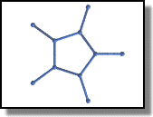

Dodecahedron
What is a dodecahedron ? See Wikipedia's definition.
I wrote this program to illustrate the power of POV-Ray's macro programming language.
Special thanks to Fabrice Liardet for all his help and chats.
The first thing to do is to create the basic scene (a camera and a light):
// Persistence of Vision Ray Tracer Scene Description File
// File: Dodecahedron.pov
// Vers: 4.0
// Desc: Dodecahedron
// Date: May 2000
// Auth: Alok Menghrajani
#version 3.5;
background {color rgb <1, 1, 1>}
// SET UP A BASIC CAMERA AND LIGHT SOURCE
camera {
location <0, 1, -20>
look_at <0, 0, 0>
}
light_source {
<20, 20, -20>
color red 1.0 green 1.0 blue 1.0
}
Then we must declare our constants, radius1 is the radius of the balls (at the intersections of each segment), and radius2 is the radius of the segments.
// DECLARE OUR CONSTANTS AND ARRAYS #declare radius1 = 0.1; #declare radius2 = 0.05; #declare VA = array[20]

In order to create the whole polyhedra, we will first create a base polygon (that will lie in the x-z plane), then "fold" the lower lateral sides, followed by the higher lateral sides.
To create the base polygon, we can use the vrotate function: vrotate(A, B) rotates A using the B vector, that means that A will be rotated along the x axis by B.x, along the y axis by B.y, and along the z axis by B.z.
In our case, we want to rotate the <1, 0, 0> vector around the y axis, so that it stays in the x-z plane.
Note: Some pov-ray functions require the angles in radians, and some in degrees. You might therefore want to check the reference manual.
// CREATE BASE PENTAGON #declare i = 0; #while (i < 5) #declare VA[i]=vrotate(<1, 0, 0>, <0, i * 360 / 5, 0>); #declare i = i + 1; #end
Now we can calculate the length of a segment. We could use basic trigonometry, but it's easier to use the vlength function.
To create the five lower lateral sides, we will create five points in the x-z plane, and then "fold" them in 3D.
These points all reside on the bissectors of each segment of the base polygon, that means they are aligned with the previously created points and the origine. (I won't demonstrate this property here, but it's obvious because of the symetric aspect of the dodecahedron).
// CREATE FIVE LOWER LATERAL SIDES #declare L = vlength(VA[0]-VA[1]); #declare i = 0; #while (i < 5) #declare VA[i+5]=VA[i]*L; #declare i = i + 1; #end
Now is is the hardest part to understand. We must now calculate the angle by which the lateral sides must be rotated.
Let gamma be the angle at the edge of the polygon (54°).
X will rotate along the PA axis. C is the projection of the point on the x-z plane (it's on the bissector of the polygon). Let beta be the angle we are searching for. When we rotate our points, we aren't using the PA axis, because we have got a vector that lies on PC.
Once we have got the angle, to create the PA axis, we can use the vcross(A, B) function, that will return a vector perpendicular to A and B.
// ROTATE FIVE LOWER LATERAL SIDES
#declare gamma = (pi - 2*pi/5)/2;
#declare apx = pi-gamma*2;
#declare PA = cos(apx)*L;
#declare cpx = pi - gamma - 2*gamma;
#declare apc = apx - cpx;
#declare PC = PA / cos(apc);
#declare beta = acos(PC / L );
#declare i = 0;
#while (i < 5)
#declare VA[i+5]=VA[i]+vaxis_rotate( VA[i+5], vcross(VA[i+5],<0, 1, 0>), beta*180/pi);
#declare i = i + 1;
#end
Creating the higher sides is like the lower ones, except that we must first compute the distance between the origine and a segment of the base polygon.
// CREATE FIVE HIGHER LATERAL SIDES #declare d = sin(gamma)+1; #declare i = 0; #while (i < 5) #declare VA[i+10]=-VA[i]*d; #declare i = i + 1; #end

Rotating the higher sides is the same principle as the lower sides, except that the rotating angle is different ! This is so because the higher sides don't rotate along the same axis, so the angles aren't the same. Basically we now need the CAX angle.
Creating the cap is done by creating a polygon like the base one but rotating it by 180°. G is the position of the center of gravity, which will help us determine at what height the cap must be placed.
// ROTATE FIVE HIGHER LATERAL SIDES #declare beta2 = acos((cos(2*gamma-pi/2+cpx)*PC)/(cos(2*gamma-pi/2)*L)); #declare i = 0; #while (i < 5) #declare VA[i+10]=vaxis_rotate( VA[i+10], vcross(VA[i+10],<0, 1, 0>), beta2*180/pi); #declare VA[i+10]=VA[i+10]-VA[i]*sin(gamma); #declare i = i + 1; #end
// CREATE CAP #declare G = (VA[5].y + VA[10].y) / 2; #declare i = 0; #while (i < 5) #declare VA[i+15]=vrotate(<1, 0, 0>, <0, i * 360 / 5 + 180, 0>)+<0, 2*G, 0>; #declare i = i + 1; #end
And now all we need to do is tell pov-ray to render...
// DODECAHEDRON READY * RENDER IT
union {
#declare i = 0;
#while (i < 20)
sphere {VA[i], radius1}
#declare i = i + 1;
#end
#declare i=0;
#while (i < 5)
cylinder {VA[i], VA[mod(i+1,5)], radius2}
cylinder {VA[i], VA[i+5], radius2}
cylinder {VA[i+10], VA[mod(i+2,5)+5], radius2}
cylinder {VA[i+10], VA[mod(i+3,5)+5], radius2}
cylinder {VA[i+15], VA[mod(i,5)+10], radius2}
cylinder {VA[i+15], VA[mod(i+1,5)+15], radius2}
#declare i = i + 1;
#end
texture {
pigment {color rgb <24/255, 70/255, 164/255>*1.2}
finish {
ambient 0.30
brilliance 2
diffuse 0.9
metallic
specular 0.70
roughness 1/60
reflection 0.25
}
}
translate <1, -G, 0>
scale <4, 4, 4>
}
plane { <0,1,0>, -5*G
texture{
pigment {color <1.0, 1.0, 1.0>}
}
finish {
diffuse 1
ambient 0
brilliance 0
}
}
// End.